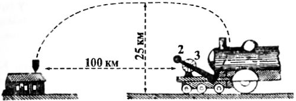
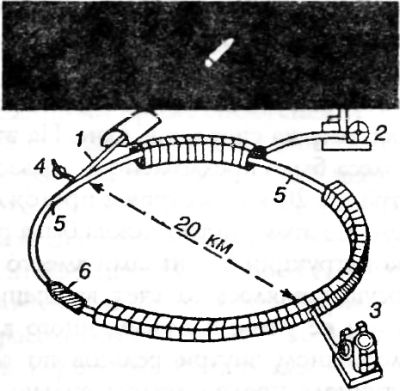
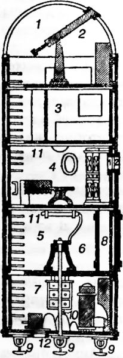
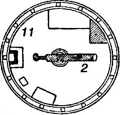
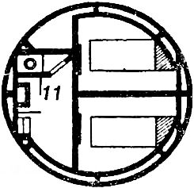
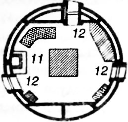
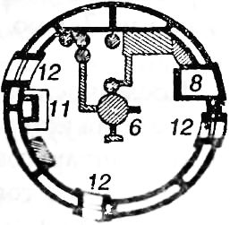

Космические метательные машины
Идея использования артиллерии в качестве средства для запуска снарядов в космическое пространство была по-своему хороша, но не могла быть реализована прежде всего потому, что до середины XX века не существовало эффективного высококалорийного пороха, способного при выгорании придать снаряду необходимое ускорение. И тогда отдельные авторы попытались обойти эту проблему, предложив проекты метательных машин, вообще не нуждающихся ни в порохе, ни в каком-нибудь ином виде топлива.
В 1915 году уже знакомый нам Анри Граффиньи описал особую баллисту для метания снарядов скачала на высоту до 25 километров и на дальность свыше 100 километров. Согласно расчетам Граффиньи, для достижения таких результатов достаточна скорость в 11,5 км/с и мощность турбины в 1000 лошадиных сил.
Движущим элементом баллисты является турбопаровоз, вращающий вал центробежной машины при помощи турбины. На валу насажен брус с противовесом и пращей, где помещается снаряд весом до 100 килограмм. В нужный момент электрическое приспособление освобождает и выталкивает снаряд.

Несколько позже Граффиньи предложил новый вариант баллисты, но уже для метания большого космического корабля, получающего свою начальную скорость благодаря вращению огромного колеса, на окружности которого и крепится этот корабль. Баллиста приводится в движение от паровой турбины, и в нужный момент летательный аппарат освобождается и под воздействием центробежной силы летит вертикально к зениту.
В 1916 году в своей статье «Возможны ли путешествия на планеты?» неугомонный французский изобретатель опубликовал подробное описание своей третьей баллисты, выполненной в виде закрепленного на оси бруса с длиной плеча в 50 метров. На одном конце груза помещается «межпланетная граната» общим весом в четыре тонны, на другом — противовес. При числе оборотов 44 об/с конец бруса должен развить скорость, приблизительно равную 14 км/с, вполне достаточную для преодоления сил земного притяжения.
Сама «межпланетная граната» должна была иметь ракетный двигатель для изменения направления и скорости движения в космическом пространстве. Высота «гранаты» составляла 11 метров, диаметр — 4,2 метра. Внутреннюю полость Граффиньи разделил на пять этажей, на которых должны были размещаться: кладовая с запасами провианта, воды и жидкого воздуха, химическая лаборатория, столовая, каюты для пассажиров и обсерватория. «Граната» могла взять на борт трех пассажиров; запасы же провианта и воздуха обеспечивали космическое турне продолжительностью в два месяца.
Идея метания межпланетного корабля на Луну при помощи вращения нашла отражение и в рассказе знаменитого русского писателя Андрея Платонова «Лунная бомба», впервые опубликованном в 1926 году.
Платонов описывает свой проект так. Инженер Крейцкопф предложил правительству некоей Республики послать к Луне особый снаряд с пассажирами внутри:
«…Металлический шар, начиненный полезным грузом, укреплялся на диске, стационарно установленном на земле. Шар укреплялся на периферии диска; сам диск имел либо горизонтальное земной поверхности положение, либо наклонное, либо вертикальное — в зависимости от того, куда посылался снаряд: на земную станцию или на другую планету.
Диску давалось достаточное для достижения снарядом со станции назначения вращение; по достижении диском необходимого числа оборотов, в нужном положении диска, соответствовавшем направлению линии полета, шар автоматом отцеплялся от диска и улетал по касательной к диску. Все совершалось по формуле центробежной силы, включив в нее коэффициент сопротивления среды.
Безопасный спуск снаряда на Землю (или на другую планету) обеспечивался автоматами на самом снаряде: при приближении к твердой поверхности замыкался в автомате ток и сжигалось некоторое количество взрывчатого вещества в том же направлении, что и полет, — отдачей достигалось торможение полета, и падение превращалось в плавный безопасный спуск. Взлет снаряда также был безопасен и плавен, так как скорость кидающего диска начиналась с нуля.
Крейцкопф предложил пустить первый снаряд по такому пути, чтобы он описал кривую вокруг Луны, близ ее поверхности, и снова вернулся на Землю.
В «лунной бомбе» будут установлены все необходимые аппараты, автоматически запечатлевающие в межпланетном пространстве, близ Луны, температуру, силу тяготения, общее состояние среды, строение электромагнитной сферы; наконец, киноаппараты воспримут через особые микроскопы все, что несется мимо снаряда».






По мнению Крейцкопфа (и Платонова), стоимость сооружения диска и «луной бомбы» к нему не должна была превысить 600 тысяч рублей.
В 1927 году во Франции появился новый проект метательной машины для запуска снаряда к Луне. На этот раз вместо вращающего колеса было предложено использовать круговой туннель диаметром в 20 километров с проложенным внутри рельсовым путем. По этому пути должна была разгоняться тележка особой конструкции с коньками вместо колес. Движение тележки осуществлялось за счет вращения ротора, закрепленного внизу ее рамы и приведенного в сцепление со статором, проложенном внутри рельсов по всей их длине. Воздух внутри туннеля предполагалось сильно разрядить для уменьшения сопротивления движению снаряда.
Туннель в определенном месте имел добавочную ветку, идущую по касательной с уклоном вверх. После достижения снарядом необходимой скорости стрелка железной дороги переводилась на эту ветку, в конце которой тележка должна была остановиться, а снаряд вылететь наружу со скоростью 12,5 км/с.
Дальнейшее движение французского снаряда в космическом пространстве управлялось выпуском «взрывных газов» (реактивный двигатель). Внутренняя полость снаряда, как и в проекте Граффиньи, была разделена на пять этажей, на которых от носа к корме размещались: обсерватория, жилое помещение на трех человек, отсек реактивного двигателя и кладовая.
Целью космической экспедиции продолжительностью в семь дней должен был стать плавный облет Луны, фотографирование ее поверхности с близкого расстояния и возвращение на Землю.